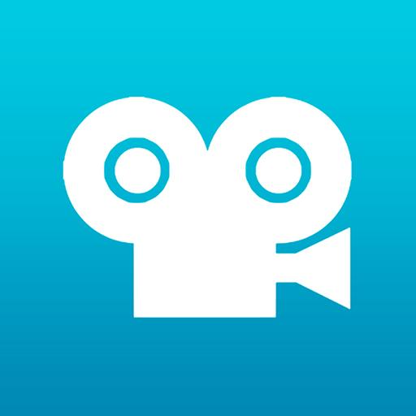
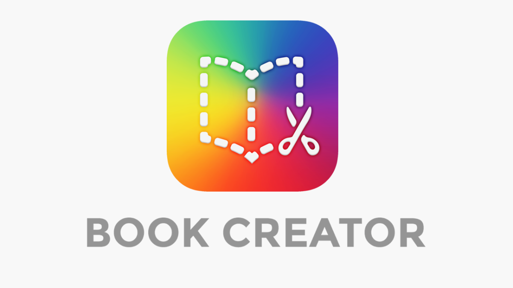
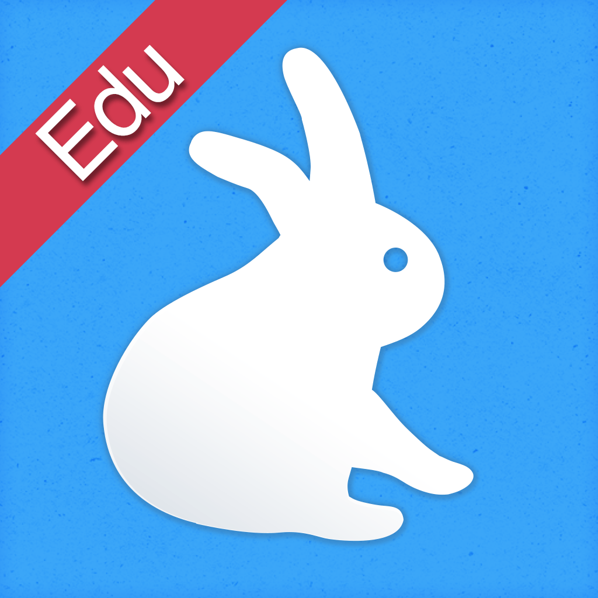
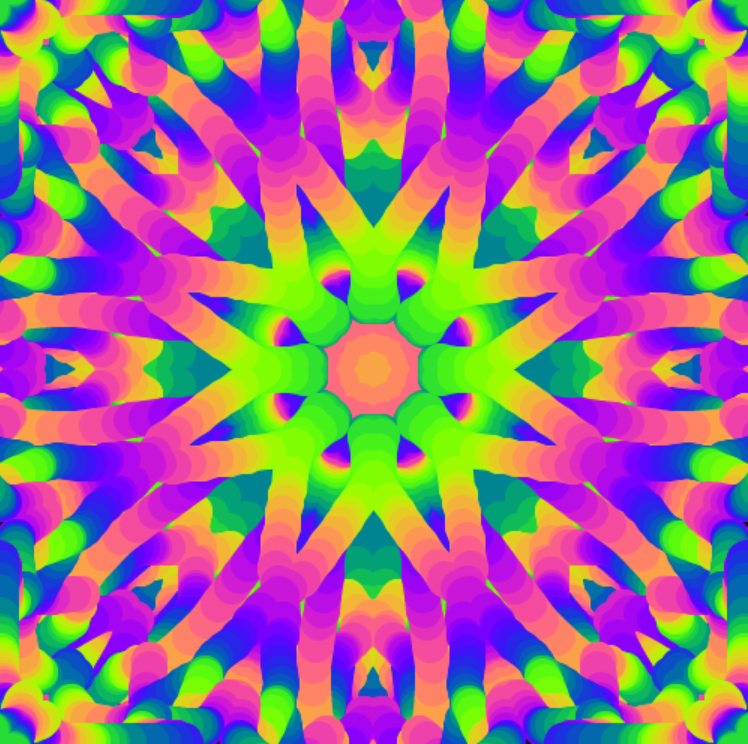
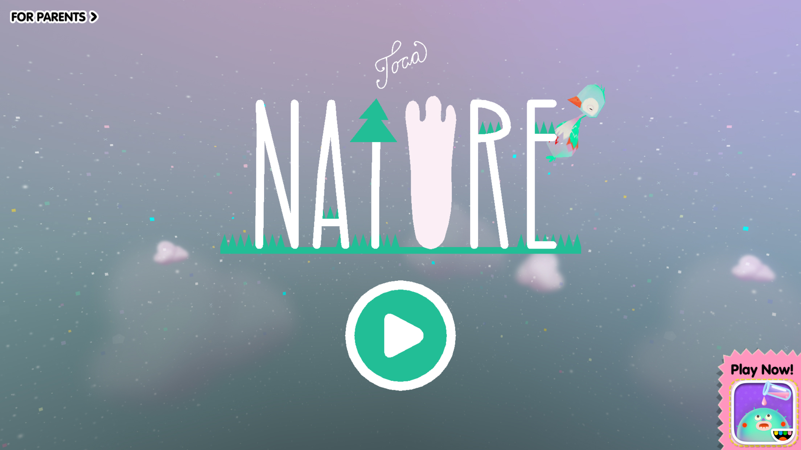

Permite a los niños crear películas en stop motion. Ideal para documentar sus construcciones y proyectos de aula, fomentando la narrativa y la creatividad colectiva.
Herramienta para transformar dibujos y grabaciones en libros digitales. Permite a los niños expresar sus procesos creativos y documentar proyectos de forma interactiva.
Aplicación para crear historias con sombras y narraciones. Favorece la colaboración y la expresión artística grupal dentro de un proyecto educativo.
Permite dibujar con simetrías y patrones caleidoscópicos. Ayuda a explorar geometría, colores y creatividad, fomentando la curiosidad matemática y artística.
Aplicación que permite explorar la naturaleza de manera interactiva. Ideal para trabajar la observación, el cuidado del medio ambiente y proyectos de investigación en grupo.
